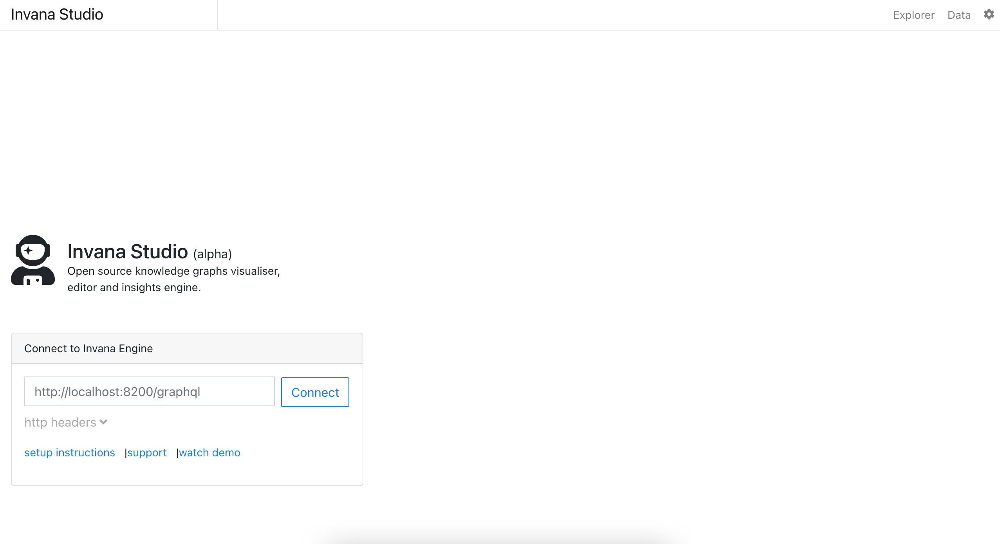

Deploy a docker version of Invana infrastructure for cloud deployment needs.
Download and install the application that suites the environment you work with .
$ docker run -p 8888:8888 -d --name invana-studio invanalabs/invana-studio
This will start invana studio at 8888 port, you can access invana studio at http://ip-address:8888.
$ docker run -p 8200:8200 -d -e GREMLIN_SERVER_URL=ws://ip-address:8182/gremlin
--name invana-engine invanalabs/invana-engine
This will start invana engine GraphQL API at 8200 port, you can access invana engine at http://ip-address:8200.
Invana Studio can be accessed at "http://ip-address:8888". Provide Invana Engine graphql URL "http://ip-address:8200/graphql" in Invana Studio connect page and click connect.
